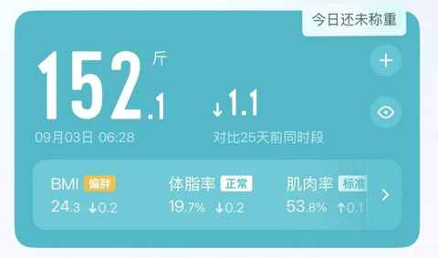
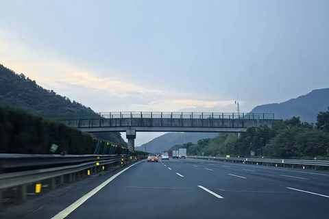
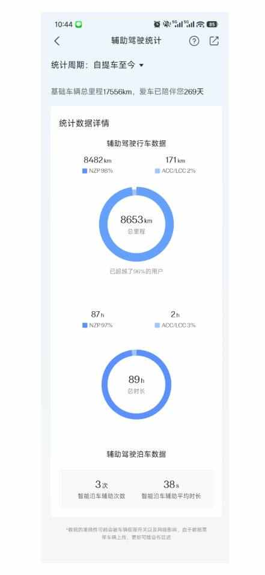
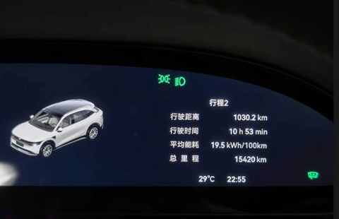
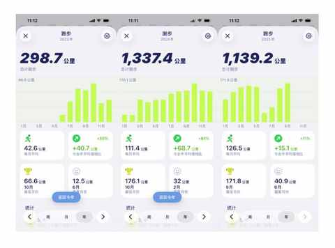
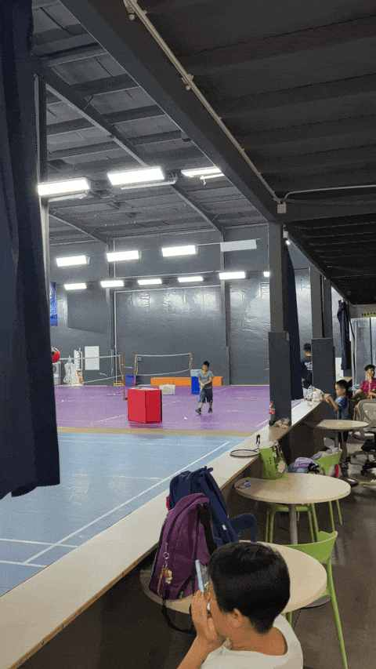

2025 年还余下 99 天，中年人的生活又有了一些新变化
一、从三位数变成两位数
每个上学的早晨都是开车送儿子上学，每次进出小区车库的时候，在扫描完车牌闸机升起的同时也会显示剩余天数。
今天上面的剩余天数突然不是三位数了，变成了两位数，上面赫然显示着 99 天。

出小区的时候提醒你一次，进小区则再次提醒，像极了游戏里面的 double kill，让你不得不承认 时光已匆匆从身边溜走！
回首这260多天，许多变化已悄然发生。
二、 一些些新变化
1️⃣ 佛系体重管理
减肥过的都懂，刚开始的几个月每天早晚都会称体重，有时候吃完饭和运动完也会不由自主的站到体重秤上。
人到中年，减肥后维持体重不反弹一年的感悟
今年对体重明显不那么看重，称体重 频次陡降，体重也上浮几斤但远远不到反弹的程度，所以也就非必要不称重，不称体重我的体重就没有变化！

上次称体重是 9 月 3 日，已经超过 20 天没有称体重。
现在主要靠体感，和照镜子，几斤甚至是几公斤的浮动对生活的影响十分有限，主打一个差不多就行。如果某一天常穿的衣服突然紧，再多动动和做下饮食的调整，最多 2 周左右衣服就又自动合身啦。
2025即将过半，减重30斤 的中年人又有了 3 个维持体重的新感受
大部分时候只要身体健康，运动表现符合预期，说明当下的体重和身体就是适配的，无需纠结数字上的变化。
2️⃣ 纯电车带来新体验
自去年 12 月 27 日提车以来，已经开车去过下面这些地方：
苏州、昆山、桐庐、合肥、淮北、珠海、厦门，近的地方（苏州和昆山）不到 100km，远的地方（珠海和厦门）超过 1000km。

不只是去了挺多地方，而且已经产出相关文章 6 篇：
- 前比亚迪车主，聊聊近两年试驾的 11 款自主品牌纯电车：小鹏、蔚来、极氪……
- 7 个月开极氪7X跑16000km后，分享这 5 个真实用车体验
- 拒绝偏科，回归实用：极氪7X，为家庭用户打造的一款“正常”的纯电 SUV
- 聊聊人生第一台车：比亚迪唐！2017-2024，真实使用体验分享
- 纯电车自驾游： 6 天 3300km 之后有了 5 个感受
- 电车春运 2300km 的智驾感受：用了就真回不去啦！
已解锁的体验有：
- ✔ 在服务区过夜
- ✔ 用辅助驾驶

- ✔ 单日开 1000km

不得不感慨国家的新能源战略，新能源汽车真的是划时代的产品，在让开车更省力的同时也能解锁更多用车体验。
3️⃣ 跑的更多
随着跑量的逐渐提升，今年预计能完成 1600km，大概月均 133km。

边跑边总结，输出了一些当时当下的所思所想：
- 中年人，你为什么要跑步？
- 千里之行，始于足下：跑步1000km 后的 5 个感受
- 普通人一年的跑步实践，完成 51 次 10km 后的 5 点感悟
- 从骑行转到跑步：一个中年人两年有氧运动的变化
- 中签！解锁首个省会城市马拉松：2025 合肥马拉松！
- 带人跑步有感：有难度、有收获、有意义
- 完成75%！跑步两年首次挑战月跑200km，分享这4个真实感受
- 跑步两年半，2700km踩坑与惊喜：分享5双国产跑鞋的真实体验
4️⃣ 儿子学羽毛球
他在幼儿园的时候学过陆地冲浪板和轮滑，但现在基本不会主动下楼去玩这些，可以说他对这两项运动并没有太大兴趣，结课后自然就放下。
当初学的时候也是因为看到楼下有很多小朋友在进行相关运动，当时喊着要报名学，学完也就学完了，并没有养成运动习惯。
与我小孩是在农村截然不同的是：我那时候可以在整个村里面和小伙伴们一起疯玩，上山下河可以无缝衔接，现在城里的小朋友在小区里面组团玩的都少，有一个能坚持下来的运动习惯尤为重要。

最近开始学羽毛球，虽然他去之前嘴上说的不要，但上场之后的态度是 180 度的大转弯。可见身体是诚实的：上课时积极主动，下课后虽然汗流浃背但还说不累。

儿童羽毛球课亲测：好的课程设置是如何“勾住”孩子的？
自己还是过于刻板，带他尝鲜尝的太少，应该各种运动都试试，有太多事情不试试是不可能知道的！
5️⃣ 思考价值感和意义感
今年以来一直会或主动或被动的思考这个问题：
作为上有老下有小的中年男人，没有工作也不赚钱，那你的成就感、价值感、意义感在哪里？
在今年思考这个比以往任何都适合，因为我真的没有工作也不赚钱！
到现在依然没有答案，但已经开始把想到的东西先记录下来：
- 从看见到接纳：90年农村出生的我，决定与 “补偿心理” 和解
- 当认清自身需求之后：面对 iPhone 17的发布，毫无波澜，无购买欲！
- 90 年，35 岁，农村大专生，毕业 13年：主动的 i 人运气不会太差
- 一个事实：人到中年，才会不断去认识自己的身体！
- 开学一周有感：生活和做菜一样，要找到平衡点
- 一位中年人的“执念”：我为什么坚持送书？
- 35 岁第一天，一个非典型中年家庭主夫的周五流水账
答案可能超级简单，但这个过程不过逾越，其中的难也只有自己能深切感受到。
由此，我现在十分厌恶一些自媒体博主，他们的标题里面充斥着各种大词：开悟、逆袭、改命、觉醒……
为了流量，基本的敬畏和常识都不管不顾！
三、先被动，后长期主义
人到中年，会逐渐被动的去做一些事情：
- 身体不适，被动调理身体，多运动；
- 娃要上学，被动早睡早起；
- 口味变化，被动多自己买菜做饭；
- ……
慢慢地，你可能在某个时刻猛然发现：这些事还挺长期主义的！
中年人的生活，最大的一个变化就是：
- 不管你是否愿意，你都必须改变
- 要去做更多长期主义的事情
- 要担起更多责任
- 要通过各种方式找到自己
- ……
中年之路就是这么的朴实、无华 、且枯燥 。